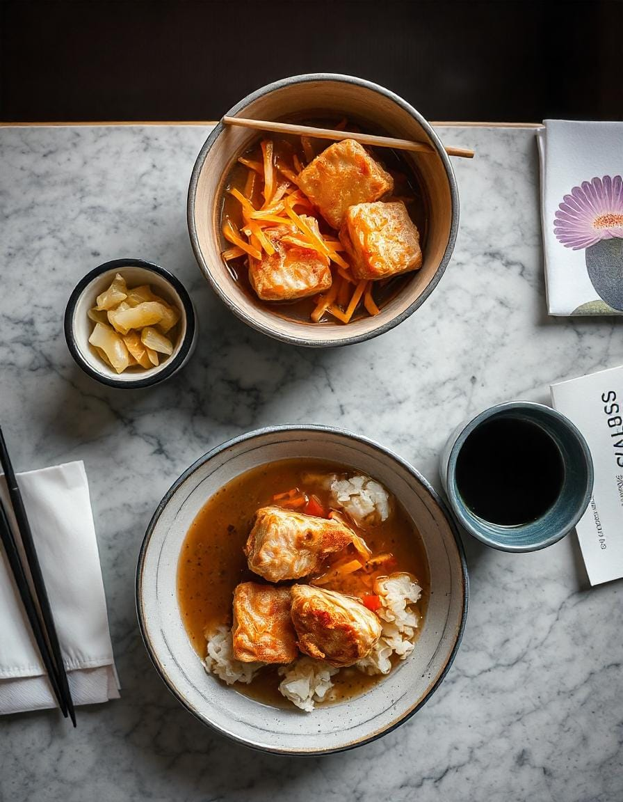

Recetas Saladas - Sakura Dreams
1. Rollos de Maki

Descripción: Rollitos de sushi rellenos de pescado fresco, verduras y arroz avinagrado.
- Ingredientes:
- 2 tazas de arroz para sushi
- 2 ½ tazas de agua
- ¼ taza de vinagre de arroz
- 2 cucharadas de azúcar
- 1 cucharadita de sal
- 4 hojas de nori (alga)
- Rellenos
- Pescado fresco en rodajas (atún, salmón, etc.)
- Pepino (en juliana)
- Aguacate (en rodajas)
- Opcional: palitos de cangrejo, camarones tempura o queso crema
- Pasos:
- Enjuague el arroz para sushi hasta que el agua salga clara. Cocine con agua en una olla arrocera o en una olla.
- En una cacerola pequeña, caliente el vinagre de arroz, el azúcar y la sal hasta que se disuelva. Mézclalo con el arroz cocido y déjalo enfriar.
- Coloque una hoja de nori sobre una estera de bambú para sushi. Extienda una fina capa de arroz sobre el nori, dejando un borde de 1 pulgada en la parte superior.
- Agregue los rellenos que desee en una línea a lo largo del arroz.
- Enrolla bien el sushi usando el tapete, sellando el borde con un poco de agua.
- Corta el rollo en 6-8 trozos con un cuchillo afilado.
- Sirva con salsa de soja, wasabi y jengibre encurtido.
2. Ramen Tonkotsu

Descripción: Ramen cremoso de caldo de huesos de cerdo con cerdo chashu y aderezos.
- Caldo ingredientes:
- 2 libras de huesos de cerdo (cuello o manitas)
- 1 cebolla (cortada por la mitad)
- 1 cabeza de ajo (cortada por la mitad)
- Jengibre de 1 pulgada (en rodajas)
- 8 tazas de agua
- Ingredientes:
- Cerdo chashu (panceta de cerdo estofada)
- Huevos pasados por agua
- Brotes de bambú
- Cebollas verdes (picadas)
- fideos ramen
- Pasos:
- Hervir los huesos de cerdo durante 10 minutos y luego enjuagar para eliminar las impurezas.
- En una olla grande, combine los huesos, la cebolla, el ajo, el jengibre y el agua. Cocine a fuego lento durante 8-12 horas, quitando la espuma.
- Colar el caldo y sazonar con sal o salsa de soja.
- Cocine los fideos ramen según las instrucciones del paquete.
- Prepare los tazones: agregue los fideos, vierta el caldo caliente y cubra con carne de cerdo chashu, huevos pasados por agua, brotes de bambú y cebollas verdes.
3. Tempura

Descripción: Verduras de temporada ligeramente rebozadas y fritas.
- Ingredientes:
- Verduras variadas (batata, calabacín, berenjena, setas shiitake)
- 1 taza de harina para todo uso
- 1 huevo
- 1 taza de agua helada
- Aceite neutro (para freír)
- Salsa tempura (tentsuyu):
- ½ taza de caldo dashi
- 2 cucharadas de salsa de soja
- 2 cucharadas de mirín
- Pasos:
- Cortar las verduras en trozos pequeños.
- En un tazón, mezcle la harina, el huevo y el agua helada hasta que estén combinados (se pueden formar grumos).
- Caliente el aceite a 170°C (340°F).
- Sumerja las verduras en la masa y fríalas hasta que estén doradas y crujientes.
- Escurrir sobre una rejilla.
- Mezcle los ingredientes de la salsa y sirva con tempura.
4. Donburi

Descripción: Chuleta de cerdo empanizada y huevo sobre arroz.
- Ingredientes
- 2 chuletas de cerdo
- sal y pimienta
- Harina, huevo, panko (para empanizar)
- 1 cebolla (en rodajas)
- 2 huevos
- ½ taza de caldo dashi
- 2 cucharadas de salsa de soja
- 1 cucharada de azúcar
- 1 cucharada de mirín
- arroz al vapor
- Pasos:
- Sazone las chuletas de cerdo, luego cúbralas con harina, huevo y panko. Freír hasta que estén dorados y bien cocidos.
- Cortar las chuletas cocidas.
- En una sartén, cocine a fuego lento la cebolla, el dashi, la salsa de soja, el azúcar y el mirin.
- Agregue la carne de cerdo en rodajas y los huevos batidos y cocine hasta que los huevos estén cuajados.
- Sirva sobre arroz al vapor.
5. Teppanyaki

Descripción: Mariscos chisporroteantes cocinados en una plancha de hierro.
- Ingredientes:
- 200 g de vieiras
- 200 g de camarones
- 200 g de calamares (limpios y cortados en rodajas)
- 2 cucharadas de mantequilla
- 2 dientes de ajo (picados)
- 2 cucharadas de salsa de soja
- 1 cucharada de sake (opcional)
- 1 cucharada de cebollas verdes picadas
- Pasos:
- Calienta una parrilla teppanyaki o una sartén grande.
- Agregue la mantequilla y el ajo, luego saltee los mariscos hasta que estén bien cocidos.
- Agregue la salsa de soja y el sake, revolviendo para cubrir.
- Adorne con cebollas verdes y sirva inmediatamente.